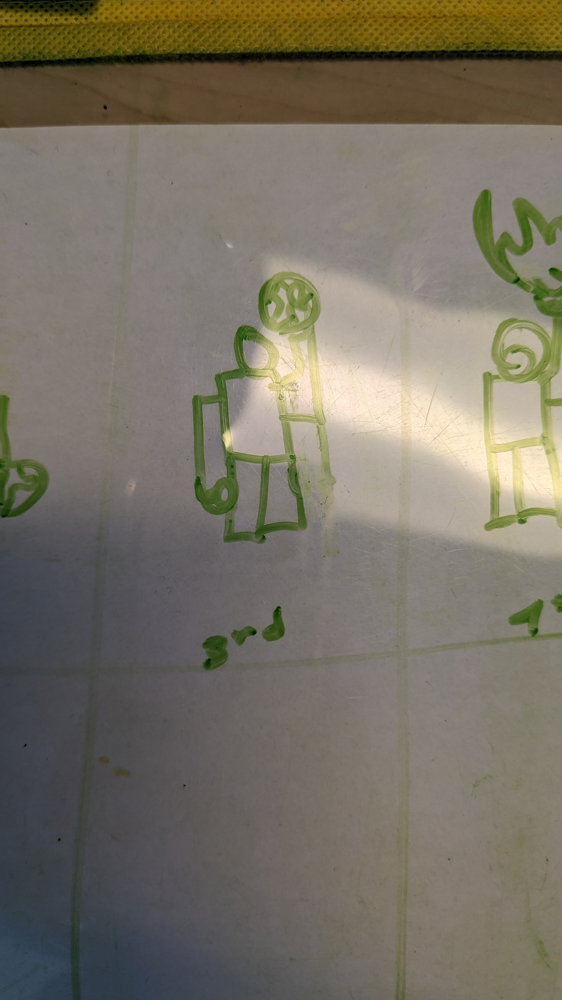
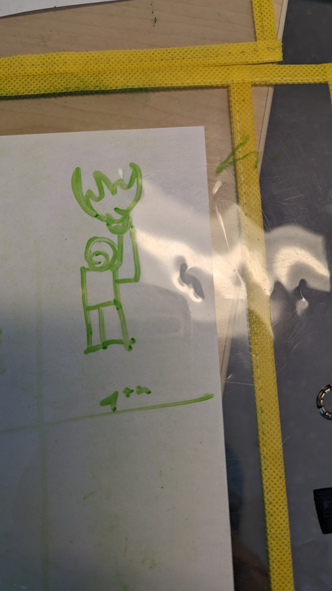
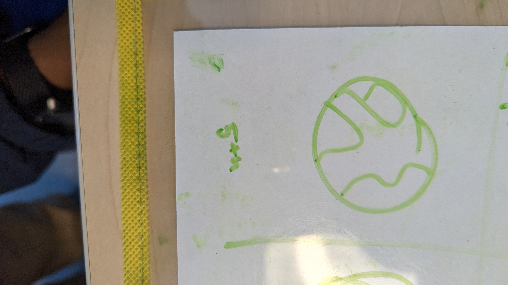
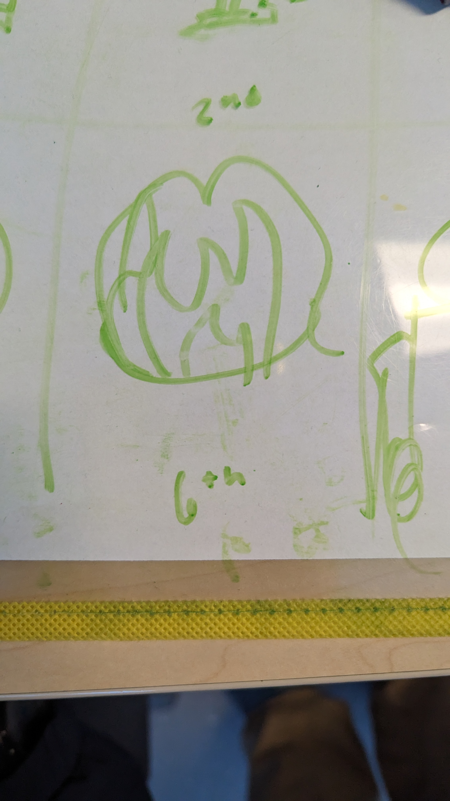
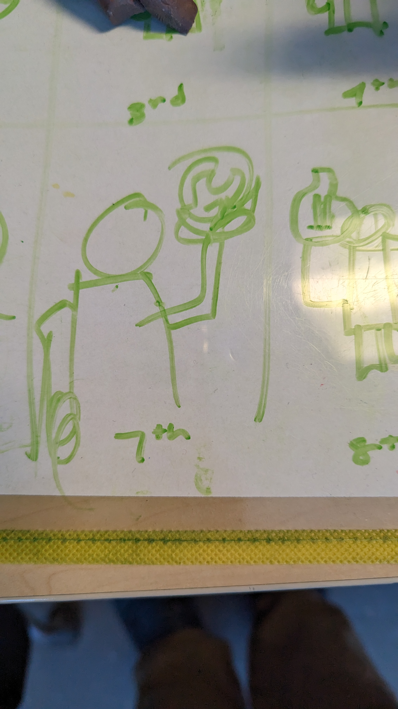
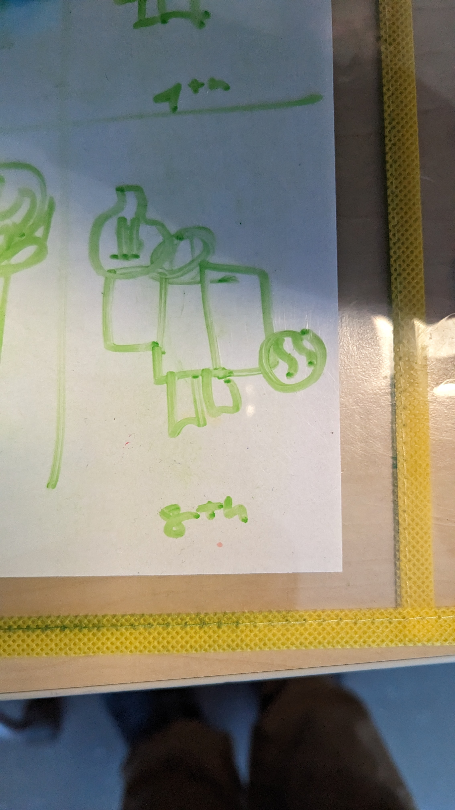
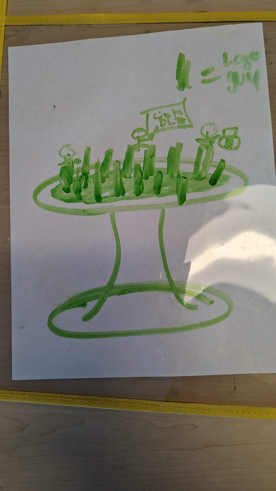

In the body section is where you’ll write all of your HTML and/or copy-and-paste it from drafts you make in codepen.io

The first part shows a person looking at the earth on the ground

The second part shows a person picking up the earth
The third part shows a person holding up the earth
The fourth part shows the earth consumed in flames
The fiifth part shows the earth by itself
The sixth part shows the earth consumed by flames 
The seventh part shows the earth being hold up again by a person 
The eighth part shows a person holding a burned earth and a new earth in his left hnad
The nineth part shows the final setup for zoetrope animation